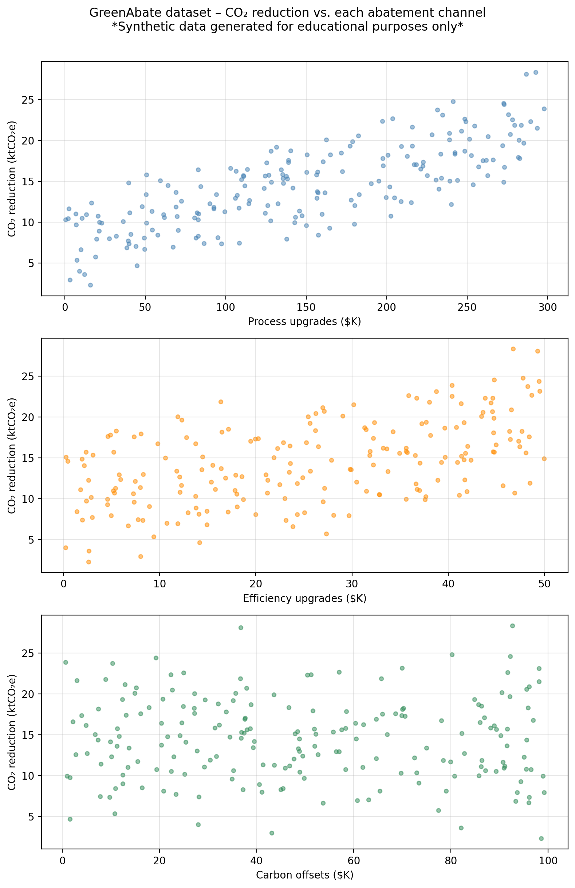
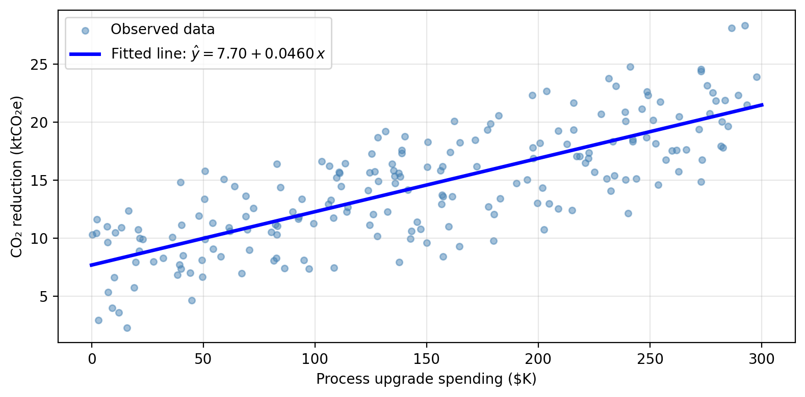
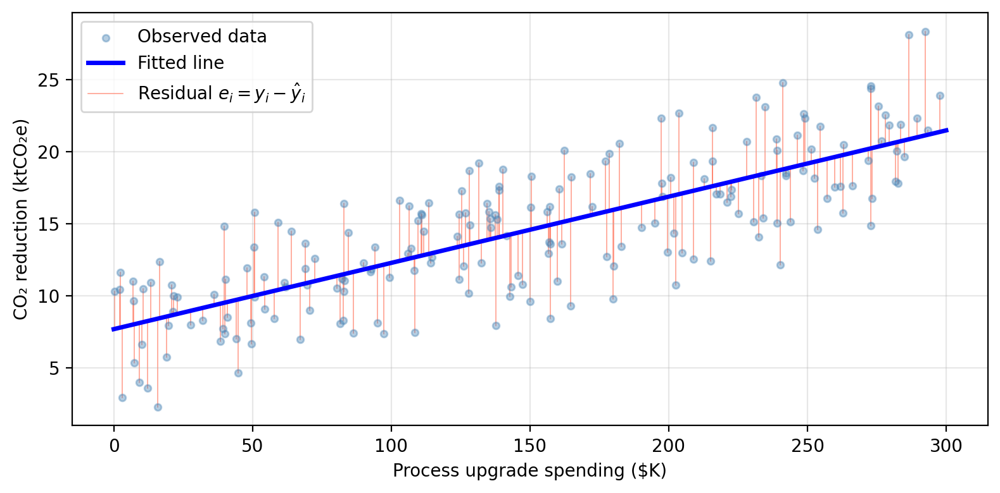

Simple linear regression
In this lesson we introduce:
- The simple linear regression (SLR) model
- Estimating coefficients with least squares
- Standard errors and confidence intervals
- Hypothesis testing: \(t\)-statistic and \(p\)-values
- Assessing model accuracy: RSE and \(R^2\)
These notes are based on chapter 3.1 of An Introduction to Statistical Learning with Applications in Python (James et al. 2023). The example data is synthetic and was generated with the aid of Claude Code for the purpose of this lesson based on the data in ISLP used in Figure 2.1.
Motivating questions
Regression is a method for estimating and studying the relationship between one or more predictors and a response variable. It allows us to investigate answers to questions such as:
- Is there a relationship between the predictor(s) and the response?
- How strong is that relationship?
- Which predictors are actually associated with the response?
- How large is the effect of each predictor on the response?
- Is the relationship linear?
- How accurately can we predict the response for a given combination of predictor values?
We do not need to answer all of these at once. We can select the questions that matter most for our specific goal, depending on whether we are doing inference or prediction.
Linear regression can be really useful for addressing all of these questions. Unlike more flexible methods that may prioritize prediction accuracy, linear regression supports direct inference: you can interpret the coefficients, compute confidence intervals, and test hypotheses about the relationship between variables.
A guiding example: emissions-reduction strategies scenario
A research consortium tracks 200 manufacturing firms across different industries and regions. For each firm they record annual spending on three emissions-reduction strategies and the resulting CO₂ savings:
process— investment in cleaner production processes ($K/year)efficiency— investment in energy efficiency upgrades ($K/year)offsets— carbon offset purchases ($K/year)co2_reduction— annual CO₂ emissions reduced (thousand metric tons, ktCO₂e)
The central question is: do these investments actually drive emissions reductions, and if so, by how much?
The figure below shows co2_reduction plotted against each predictor separately.
We can see the process spending shows the strongest linear association with CO₂ reductions; efficiency spending shows a moderate relationship; offsets shows a weak one. In this lesson we focus on simple linear regression (one predictor at a time), using process as our primary example. We will bring in all three predictors in the next lesson on multiple linear regression.
Simple linear regression
Simple linear regression (SLR) assumes a (roughly) linear relationship between a single predictor \(X\) and a response \(Y\). The model is given by
\[Y \approx \beta_0 + \beta_1 X\]
where
- \(\beta_0\) is the y-intercept: the value of \(Y\) when \(X = 0\),
- \(\beta_1\) is the slope: the average change in \(Y\) for a one-unit increase in \(X\).
Together, \(\beta_0\) and \(\beta_1\) are the model coefficients (also called parameters). They define the true underlying function \(f\) that maps \(X\) to \(Y\).
In practice, we do not know the true \(\beta_0\) and \(\beta_1\), so we estimate them from data. Given estimates \(\hat{\beta}_0\) and \(\hat{\beta}_1\), our prediction for \(Y\) at a value \(x\) is
\[\hat{y} = \hat{\beta}_0 + \hat{\beta}_1 x = \hat{f}(x).\]
Remember the “hat” notation (\(\hat{\ }\)) throughout these notes indicates an estimated quantity, not the true, unknown population value.
For the GreenAbate dataset, using process as the sole predictor, a linear model will model CO₂ reductions as
\[\texttt{co2\_reduction} \approx \hat{\beta}_0 + \hat{\beta}_1 \cdot \texttt{process}\]

Check-in
- In the context of this problem, what does \(\hat{\beta}_0\) represent?
- What does \(\hat{\beta}_1\) represent?
- If a firm spends $150K on process upgrades, what is the model’s predicted CO₂ reduction?
Discussion
- \(\hat{\beta}_0\) is the intercept: the model’s predicted CO₂ reduction for a firm that spends $0 on process upgrades. In practice this baseline reflects reductions driven by factors other than process spending that are not captured in the model.
- \(\hat{\beta}_1\) is the slope: the average increase in CO₂ reduction (in ktCO₂e) associated with each additional $1K spent on process upgrades. A positive \(\hat{\beta}_1\) means that higher process investment is associated with greater reductions.
- At \(x = 150\) we have that \(\hat{y} = \hat{\beta}_0 + \hat{\beta}_1 \cdot 150\). With the fitted values from the model this gives approximately 14.59 ktCO₂e.
Estimating the coefficients
Residuals and Residual sum of squares (RSS)
Given \(n\) training observations \((x_1, y_1), \ldots, (x_n, y_n)\), we want to find \(\hat{\beta}_0\) and \(\hat{\beta}_1\) such that the line \(\hat{y} = \hat{\beta}_0 + \hat{\beta}_1 x\) is as close as possible to the observed data. For this, we need to define what does “as close as possible” mean mathematically.
In our previous lesson we had talked about the residual for observation \(i\) being the difference between the observed response and the predicted response:
\[e_i = y_i - \hat{y}_i = y_i - \hat{\beta}_0 - \hat{\beta}_1 x_i.\]
The residual sum of squares (RSS) totals the squared residuals across all observations:
\[RSS = \sum_{i=1}^{n} (y_i - \hat{y}_i)^2 = \sum_{i=1}^{n} (y_i - \hat{\beta}_0 - \hat{\beta}_1 x_i)^2.\]
The least squares approach to fit the regression line chooses \(\hat{\beta}_0\) and \(\hat{\beta}_1\) to minimize the RSS. The residuals are shown as vertical segments below:

Minimizing the RSS using calculus gives the following formulas:
\[\hat{\beta}_1 = \frac{\sum_{i=1}^{n}(x_i - \bar{x})(y_i - \bar{y})}{\sum_{i=1}^{n}(x_i - \bar{x})^2}, \text{and}\]
\[\hat{\beta}_0 = \bar{y} - \hat{\beta}_1 \bar{x},\]
where \(\bar{x} = \frac{1}{n}\sum x_i\) and \(\bar{y} = \frac{1}{n}\sum y_i\) are the sample means.
Two important points:
The optimal \(\hat{\beta}_0\) and \(\hat{\beta}_1\) depend entirely on the training data. Feed the same model different data and you get different estimates. This is the source of estimation uncertainty.
In practice, the computer computes these for you. The key is understanding what the estimates represent, not memorizing the algebra.
What is the relation between the RSS and the MSE?
In the last lession we talked about the mean squared error (MSE) as a way to measure how close any estimate \(\hat{f}\) is to the observed data:
\[ MSE = \frac{1}{n} \sum_{i=1}^n(y_i - \hat{f}(x_i))^2. \]
Notice that the MSE is the average of the RSS:
\[RSS = \sum_{i=1}^{n} (y_i - \hat{f}(x_i))^2.\]
Since \(n\) is a positive constant, minimizing the MSE and minimizing the RSS would give the same estimates for the coefficients \(\hat{\beta}_i\).
However, the averaging by the dataset’s size in the MSE allows the MSE to be more meaningful as an error metric that is comparable across datasets. The RSS will always grow with as the number of observations increases.
Accuracy of the coefficient estimates
Standard errors
Once we have \(\hat{\beta}_0\) and \(\hat{\beta}_1\), a natural question is: how close are these estimates to the true \(\beta_0\) and \(\beta_1\)?
Recall that if our true function describing the relationship between predictor and response is given by \(f(X) = \beta_0 + \beta_1 X\), then our observed data is described by:
\[Y = f(X) + \epsilon = \beta_0 + \beta_1 X + \epsilon,\]
where \(\epsilon\) is an error term.
The standard error of an estimate quantifies, on average, how far our estimates \(\hat{\beta}_i\) are from the true coefficients \(\beta_i\). For the slope \(\hat{\beta}_1\) the standard error is given by
\[SE(\hat{\beta}_1)^2 = \frac{\sigma^2}{\sum_{i=1}^{n}(x_i - \bar{x})^2},\]
where \(\sigma^2 = \text{Var}(\epsilon)\) is the variance of the error term (assuming that the errrors \(\epsilon_i\) for each observation have common variance \(\sigma^2\) and are uncorrelated), and \(\bar{x} =\frac{1}{n}\sum_{i=1}^n x_i\) is the average of the \(x\) values.
The standard error of the \(y\)-intercept \(\hat{\beta}_0\) is:
\[SE(\hat{\beta}_0)^2 = \sigma^2 \left[\frac{1}{n} + \frac{\bar{x}^2}{\sum_{i=1}^{n}(x_i - \bar{x})^2}\right].\]
In practice \(\sigma^2\) is unknown and must also be estimated from the data using the residual standard error, which we will talk about in a moment.
Check-in
How does the standard error for the slope estimate \(\hat{\beta_1}\) change as the \(x\) values are more spread out?
Discussion
As the \(x\) values spread, they are further away from their mean \(\bar{x}\), this causes the sum in the denominator to increase, thus reducing the standard error \(SE(\hat{\beta}_1)^2\). This makes sense intuitively as more spread out values for \(x\) should give us a better estimate for the slope of the function.
Confidence intervals
Standard errors allow us to construct confidence intervals for the true coefficients. A 95% confidence interval is a range of values such that, if we repeated our experiment many times, approximately 95% of the computed intervals would contain the true parameter value.
For simple linear regression, the approximate 95% confidence interval for a coefficient \(\beta_i\) is:
\[[\hat{\beta}_i - 2 \cdot SE(\hat{\beta}_i), \hat{\beta}_i + 2 \cdot SE(\hat{\beta}_i)].\]
The “approximately” is becasue the factor of 2 will vary slightly with the numnber of observations used to perform the regression. Strictly speaking, this factor will come for the 97.5% quantile of a \(t\)-distribution with \(n-2\) degrees of freedom. In practice, we use implemented methods in our computers to calculate these confidence intervals exactly.
Interpreting the confidence interval
In general terms, we interpret the confidence interval for the slope \(\hat{\beta}_1\) as follows:
a 95% confidence inerval for \(\beta_1\) of \([a_1, b_1]\) means that, using a procedure that captures the true slope 95% of the time, we estimate that a one-unit increase of \(x\) is associated with an average increase in \(y\) between \(a_1\) and \(b_1\) units.
and we interpret the confidence interval for hte intercetp \(\hat{\beta}_0\) like
a 95% confidence inerval for \(\beta_0\) is \([a_0, b_0]\) means that, using a procedure that captures the true intercept 95% of the time, we estimate the model’s \(y\)-intercept is between \(a_0\) and \(b_0\).
A narrower confidence interval means our estimate is more precise. This happens when the sample size \(n\) is large and when the residual variance \(\sigma^2\) is small.
Check-in
The exact 95% confidence intervals for each coefficient is:
95% CI for β₀ (intercept): [6.823, 8.567]
95% CI for β₁ (process): [0.041, 0.051]- What does the CI [0.041, 0.051] tell us about the relationship between process upgrade spending and CO₂ reductions?
- What if the interval had been [-0.002, 0.051] instead?
Discussion
The entire interval [0.041, 0.051] is above 0 so our procedure points to a positive slope: firms that invest more in cleaner production processes achieve greater CO₂ reductions. Each additional $1K in process spending is associated with a reduction of between 0.041 and 0.051 ktCO₂e per year on average.
An interval of [-0.002, 0.051] includes 0. We cannot rule out that \(\beta_1 = 0\), meaning we cannot confidently conclude that process spending drives reductions. Wider intervals generally arise from smaller samples or noisier data.
Hypothesis testing
The null and alternative hypothesis
A fundamental question in regression is: is there actually a relationship between \(X\) and \(Y\)? We frame this as a hypothesis test:
- Null hypothesis \(H_0\): there is no relationship between \(X\) and \(Y\), i.e., \(\beta_1 = 0\).
- Alternative hypothesis \(H_a\): there is some relationship between \(X\) and \(Y\), i.e., \(\beta_1 \neq 0\).
Note what these imply for the model:
- If \(\beta_1 = 0\), then \(\hat{Y} = \hat{\beta}_0\), which means the prediction is just a constant, so \(X\) carries no information about \(Y\).
- If \(\beta_1 \neq 0\), then \(\hat{Y} = \hat{\beta}_0 + \hat{\beta}_1 X\) — \(Y\) is related to \(X\).
The \(t\)-statistic & \(p\)-value
To test \(H_0\), we need to determine whether \(\hat{\beta}_1\) is sufficiently far from 0 relative to its uncertainty. We use the \(t\)-statistic
\[t = \frac{\hat{\beta}_1}{SE(\hat{\beta}_1)}\]
which measures how many standard deviations \(\hat{\beta}_1\) is away from 0. If there truly is no relationship between the variables (\(\beta_1 = 0\)), then \(t\) follows a \(t\)-distribution with \(n - 2\) degrees of freedom.
The \(p\)-value is the probability of obtaining a \(t\)-statistic at least as large as the observed \(|t|\) in absolute value, assuming there is no relationship between the variables (i.e. assuming \(H_0\) is true). Conventionally, \(p < 0.05\) is used as a threshold for rejecting \(H_0\), though the appropriate cutoff depends on context.
Interpreting the \(p\)-value
- A small \(p\)-value means it is very unlikely to have observed a \(\hat{\beta}_1\) this far from 0 by chance alone, if \(\beta_1\) were truly 0. We reject \(H_0\) and conclude there is a relationship between \(X\) and \(Y\).
- A large \(p\)-value means our data are consistent with \(H_0\), so we do not reject \(H_0\): it could be that there’s no relationship between \(X\) and \(Y\)!
A summary of this story is:
We want to know whether \(X\) is related to \(Y\).
We compute the \(t\)-statistic which is the number of standard deviations that \(\hat{\beta}_1\) is away from 0.
We ask the question: what is the probability that \(|\hat{\beta}_1|\) is more than \(|t|\) standard deviations away from zero if the true parameter is \(\beta_1=0\)? This probability is the \(p\)-value.
There are two options depending on the answer to this question:
- Option 1: small probability that \(\hat{\beta}_1\) is that far away from 0 if the true parameter \(\beta_1=0\): so the most likely scenario is that \(\beta_1\neq0\), which means the variables are related.
- Option 2: high probability that \(\hat{\beta}_1\) is that far away from 0 is the true parameter \(\beta_1=0\): maybe \(\beta_1=0\) is really zero, which means maybe there is no relationship between the variables.
Check-in
The table below shows the regression output for the SLR of co2_reduction on process:
Coefficient Std. error t-statistic p-value
Intercept 7.6953 0.4421 17.41 < 0.0001
process 0.0460 0.0026 17.64 < 0.0001Looking at the regression output above:
- What does the \(p\)-value for
processtell us about the relationship between process upgrade spending and CO₂ reductions? - The intercept also has a very small \(p\)-value. What does this mean about the intercept estimate?
- How would you interpret the coefficient for
processin plain language?
Discussion
The very small \(p\)-value for
processgives strong evidence that \(\beta_1 \neq 0\): there is a evidence of a positive relationship between process upgrade investment and CO₂ emissions reductions.The \(p\)-value for the intercept tests \(H_0: \beta_0 = 0\), not whether the intercept is a useful predictor. A significant intercept simply means the regression line does not pass through the origin. There is likely some baseline CO₂ reduction even at zero process spending (likely from other firm-level factors not captured in the model). The intercept’s \(p\)-value is rarely the question of interest.
A coefficient of roughly 0.046 means that, on average, each additional $1K invested in cleaner production processes is associated with approximately 0.046 ktCO₂e (46 metric tons) of additional CO₂ reduction.
Assessing model accuracy
Beyond asking whether a relationship exists, we want to know how well the model fits the data. Two key measures are the Residual Standard Error and \(R^2\).
Residual Standard Error (RSE)
The RSE estimates the standard deviation of the error term \(\epsilon\) and is defined as:
\[RSE = \sqrt{\frac{RSS}{n-2} } = \sqrt{\frac{1}{n-2} \sum_{i=1}^{n}(y_i - \hat{y}_i)^2}.\]
It represents the average amount by which the response deviates from the true regression line. A smaller RSE means the model fits the data more closely.
Interpreting RSE
- A small RSE occurs when the residuals \(y_i - \hat{y}_i\) are close to 0, meaning our predictions are near the actual values.
- RSE is measured in the same units as \(Y\), which makes it interpretable but also context-dependent.
Check-in
For our example data data, the RSE of the SLR on process is approximately 3.26 ktCO₂e. This means predictions are off by about 3,260 metric tons on average. Is this a good or bad fit? What additional information would you need to judge this?
Discussion
Whether an RSE of 3.26 ktCO₂e is acceptable depends on context. A few ways to judge it:
- Relative to the response range: CO₂ reductions in the dataset range roughly from 3 to 27 ktCO₂e, so an average error of 3.26 represents about 12–15% of the response range. That is a moderate error, not great, but not terrible.
- Relative to the mean response: the mean reduction is around 14 ktCO₂e, so the RSE is about 23% of the mean. This suggests the model has meaningful predictive error.
- Relative to the firm’s target: if a firm has committed to reducing 5 ktCO₂e per year, an average prediction error of 3.26 is large relative to their target. For a firm targeting 25 ktCO₂e, it may be acceptable.
\(R^2\) statistic
An easier to interpret statistic is the \(R^2\), which measures the proportion of variance in \(Y\) explained by the regression model. To compute it we need these ingredients:
\(TSS = \sum_{i=1}^{n}(y_i - \bar{y})^2\) is the Total Sum of Squares. This captures the inherent total variability in \(Y\), how much do the observations vary from the mean \(\bar{y}\).
\(RSS = \sum_{i=1}^{n}(y_i - \hat{y}_i)^2\) is the Residual Sum of Squares. This captures the variability in \(y\) unexplained by the regression. Think about explained by regression being \(y_i = \hat{y}_i\).
So
\[\underbrace{TSS}_{\text{total variability in }Y} - \underbrace{RSS}_{\text{unexplained by regression}} = \text{variability explained by regression}\]
We use this to define \[R^2 = \frac{TSS - RSS}{TSS} = 1 - \frac{RSS}{TSS}.\]
So \(R^2\) is the fraction of variability that the model accounts for:
\[R^2 = \frac{\text{variability explained by regression}}{\text{total variability in }Y}.\]
Interpreting \(R^2\)
- \(R^2\) is always between 0 and 1.
- \(R^2\) close to 1: the model explains most of the variability in \(Y\): a good fit.
- \(R^2\) close to 0: the model explains little of the variability: \(X\) alone is not capturing much of what drives \(Y\). This could mean the true relationship is non-linear, the model needs more predictors, or there is a lot of irreducible noise.
- What counts as a “good” \(R^2\) is context-dependent.
- You should always look at your data to assess linearity and an existing relationship!
Check-in
The table below summarizes the accuracy of the SLR of co2_reduction on process:
Quantity Value
Residual standard error 3.14
R² 0.611For the SLR of co2_reduction on process, RSE = 3.14 ktCO₂e and \(R^2\) = 0.611.
- How would you interpret the \(R^2\) value in plain language?
- The RSE is 3.14 ktCO₂e. Thinking back to the RSE check-in, is this model a good fit for a firm with an annual CO₂ reduction target of 5 ktCO₂e? What about a firm targeting 25 ktCO₂e?
Discussion
An \(R^2\) of 0.611 means that approximately 61.1% of the variability in CO₂ reductions across firms is explained by a linear variation in process upgrade spending alone. The remaining ~38.9% of variability is driven by other factors not included in this model.
An RSE of 3.14 ktCO₂e (≈ 3138 metric tons) is large relative to, for example, a 5 ktCO₂e reduction target. A prediction error of that magnitude could meaningfully mislead decisions for a small-target firm. For a firm targeting 25 ktCO₂e, the same RSE represents roughly 13% of the target, which may or may not be acceptable depending on how precise their planning needs to be.
Training and test performance
RSE and \(R^2\) are both computed on the same data used to fit the model — they are in-sample measures, directly analogous to the training MSE we studied in the previous lesson. Just like the training MSE, they can give an overly optimistic picture of how the model will perform on new, unseen observations.
For prediction goals, the approach is the same one as before: hold out a test set before fitting anything, train the model on the training portion only, and evaluate on the held-out test set.
Check-in
After using 30% of our available data for testing, we obtain the following metrics for the training and test MSE:
Training MSE: 9.185
Test MSE: 11.582- A firm wants to use this model to predict CO₂ reductions for new firms not in this dataset. Which metric should they report, training MSE or test MSE? Why?
- Our SLR has only two parameters. Based on the bias-variance tradeoff from the previous lesson, would you expect this model to overfit?
Discussion
Test MSE. The goal is prediction on new, unseen firms, not on the data the model was already trained on. The training MSE tells us how well the model fits the data it was optimized on, which is always an overly optimistic estimate of real-world performance.
No. SLR sits at the low-flexibility end of the bias-variance tradeoff. It has low variance since the fitted line changes relatively little if we retrain on a different sample from the same population. But it has potentially high bias if the true relationship between \(X\) and \(Y\) is non-linear, a straight line will be systematically wrong no matter how much data we give it.
This brings up an important distinction that guides how we use and report regression results:
Inference: the goal is to understand the relationship. This means interpret coefficients, compute confidence intervals, test hypotheses. You typically use all available data, and RSE and \(R^2\) are appropriate summaries of model fit.
Prediction: the goal is to generate accurate forecasts for new observations. You should always hold out a test set and report test MSE as the primary accuracy measure. RSE and \(R^2\) computed on training data can be misleading here.
References
James, Gareth, Daniela Witten, Trevor Hastie, Robert Tibshirani, and Jonathan E. Taylor. 2023. An Introduction to Statistical Learning: With Applications in Python. Springer Texts in Statistics. Cham: Springer.